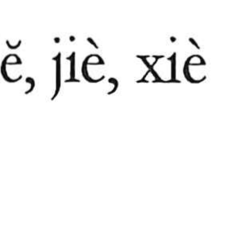

解

Kun: toku, tokasu, tokeru | On: kai, ge
to untie ・ to explain ・ to solve ・ to take apart ・ to dissolve
Explanation
The character is built from 角 (horn), 刀 (knife), and 牛 (ox), originally depicting the act of cutting an ox’s horns with a knife. In the same semantic field stands 釈 (釋), which first meant to cut up a carcass and portion it out—the tearing apart and distribution of meat. From these concrete actions of removing, cutting apart, and dividing, 解 developed its figurative force: to unfasten and unravel what is knotted, to clarify and explain meaning (as in 解釈), and, by extension, to resolve questions and problems (as in 解決).